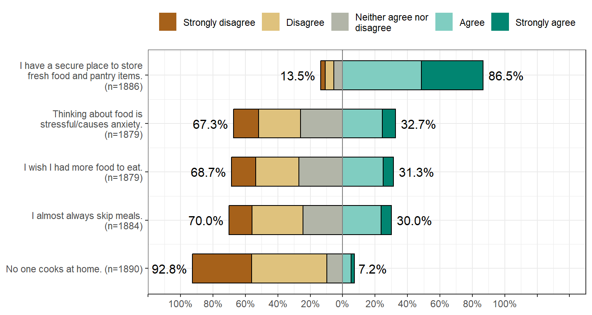
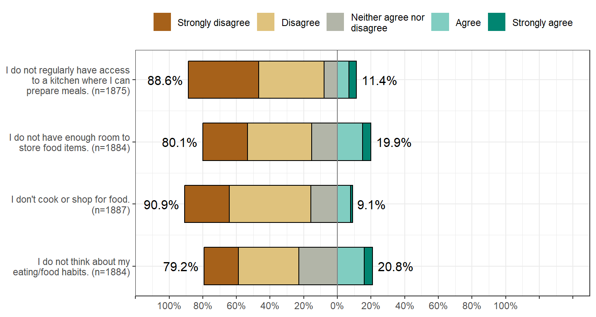
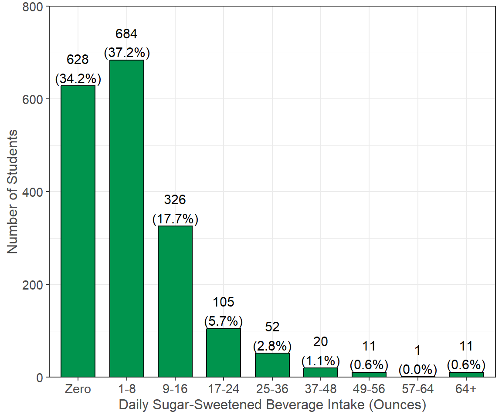
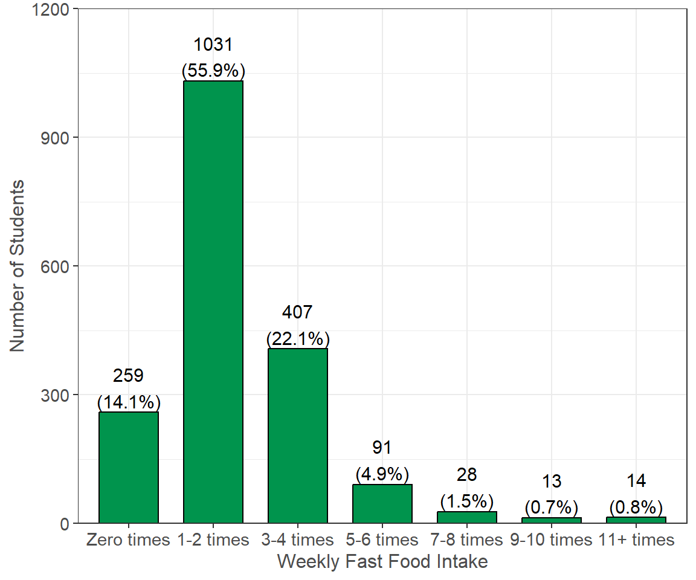
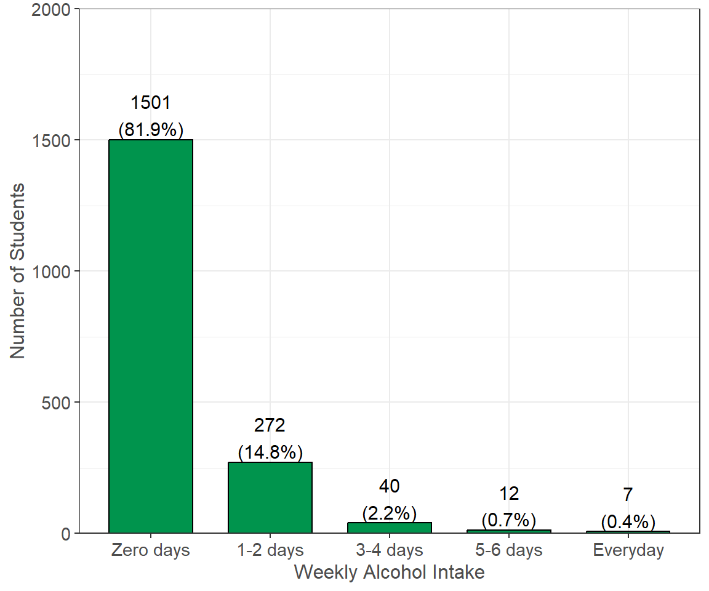
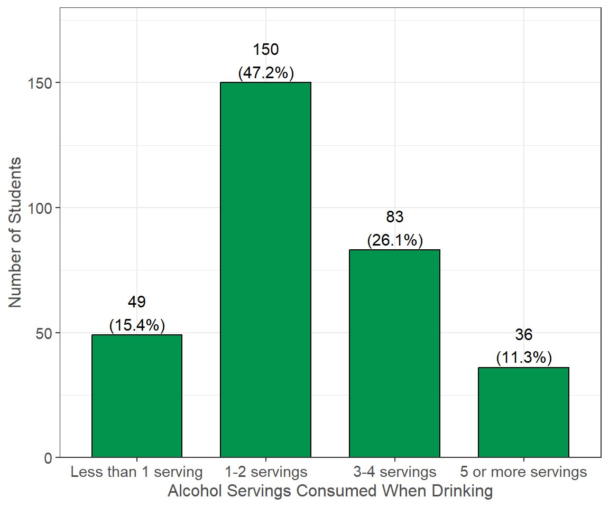

Eating Habits
This section examines students’ eating habits. Students were asked about their cooking habits, access to kitchens, access to storing food, fruit and vegetable intake, sugar sweetened beverage intake, fast food intake, alcohol intake, and confidence in cooking.
Current Eating/Cooking Habits
For each of the following statements, indicate how strongly you agree or disagree about your current eating and cooking habits:
Figure 8.1: The majority of students have access to kitchens and storing food. Only 31.3% of students did not wish they had more food to eat and only 30.0% did not always skip meals.
Daily Fruit & Vegetable Consumption
How many servings of fruits and vegetables do you usually consume per day? (not including fruit juices)
1 serving= 1 medium piece of fruit; 1/2 cup fresh, frozen, or canned fruits/vegetables; 1 cup salad greens; or 1/4 cup dried fruit. (n=1810, 86% of 2110 reporting)

Figure 8.2: The majority of students reported eating 1-2 servings servings per day (72.9%). Only 1.7% of students are meeting the recommended 5 or more servings of fruits and vegetables per day.
Daily Sugar Sweetened Beverage Intake
How many ounces of regular soda/cola/pop, sports drink, or energy drinks do you consume each day? (n=1838, 87% of 2110 reporting)
Figure 8.3: A large number of students reported drinking 1-8 ounces per day (37.2%). More than half of the students drank at least 1 serving of sugar sweetened beverages per day (65.8%).
Weekly Fast Food Intake
How frequently do you eat from fast food restaurants, convenience stores, or vending machines for a meal or meal replacement? (n=1843, 87% of 2110 reporting)

Figure 8.4: More than half of the students reported eating fast food 1-2 times per week (55.9%). The majority of students (85.9%) reported eating fast food at least once per week.
Weekly Alcohol Intake
How often do you consume at least one serving of alcohol? e.g. 12 ounces of beer, a 5-ounce glass of wine, or a drink containing 1 shot of liquor or hard alcohol (n=1832, 87% of 2110 reporting)
Figure 8.5: The majority of students reported drinking zero days per week (81.9%) while 18.1% reported drinking at least one day per week.

Alcohol Servings Consumed
Typically, how many servings of alcohol do you consume when you drink alcohol? e.g. 12 ounces of beer, a 5-ounce glass of wine, or a drink containing 1 shot of liquor or hard alcohol (n=318, 15% of 2110 reporting)

Figure 8.6: Of the students that reported drinking at least once per week, 47.2% of students reported drinking 1-2 servings when they drink while 11.3% reported drinking 5 or more servings.
Cooking Confidence
The following questions pertain to how comfortable you feel about buying or preparing food:

Figure 8.7: Overall, the majority of students feel confident in their cooking habits. A notable 39.8% of students were not confident in buying healthy foods on a budget and 40.2% of students were not confident that they can cook healthy foods for their family on a budget.